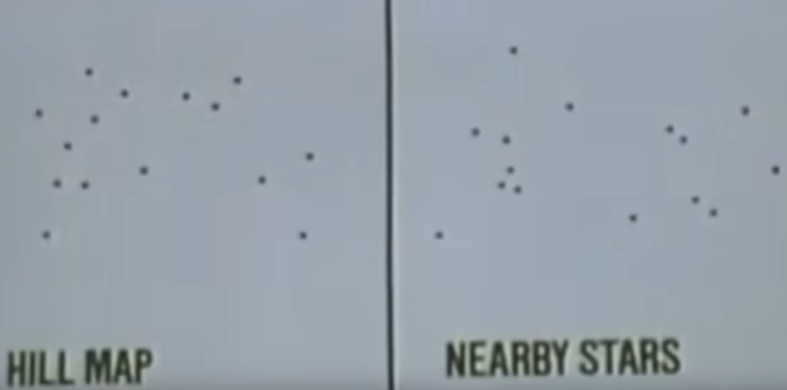

The Betty Hill Star Map: Where are my aliens from?
I apologize for the lack of sources provided in this post. It is quite difficult to find accessible primary sources, especially for these kinds of topics where most details are only accounted in books that are not freely available. If you do not see a source, take it with a grain of salt.

In Ufology “lore”, it is widely accepted/parroted that the well-known, short, enlarged head, with large black eyes, Grey alien comes from the Zeta Reticuli binary star system.
This is due to a myriad of (supposedly) independent “abductees”, “contactees”, or “insiders”, who have made mentions of Zeta Reticuli (as well as its association with the Greys) in their “lore”, e.g., Bob Lazar, Project Serpo, David Icke, Ashtar, Cosmic Awareness, or the various “Galactic Federation” “channelings”1.
1 I’m not going to provide sources for these, but I have around 2 decades of exposure to these stuffs and can thus speak from experience.
The very first association (as far as I know) of these Greys with the Zeta Reticuli star system originates from the Barney and Betty Hill incident back in the 1960s. Particularly, from this incident came a “star map”, crudely drawn from memory under hypnotic regression 2 years after the alleged incident, which vaguely resembles a constellation of stars that include the Zeta Reticuli binary star system.
Today, let us examine this star map with modern tools and data, and determine if there is any credence to this association with the Zeta Reticuli star system.
But first, let us have some context.
The Barney and Betty Hill Incident (abridged)
On the night of 19 September 1961, American couple Barney and Betty Hill observed a light in the sky while they were driving home from vacation on some stretches of deserted roads. They stopped occasionally to observe the light with their binoculars, and eventually surmise that the light is a UFO after it descended towards their vehicle.
Barney observed the object with the binoculars, spotting some humanoid figures looking out of the craft’s windows. As the craft approached closer, the Hills drove away in fear of being captured. Afterward, they experienced some “missing time” where there are gaps in their memory2 before they returned home.
2 The experience of “missing time” is quite common among alien abduction stories.
I encourage the interested reader to read the fascinating full story themselves, but our concern here is the star map, which comes 2 years after this incident.
Around 2 years later, under some advice, the Hills underwent hypnosis sessions with Dr. Benjamin Simon to “recover” lost/repressed memories of the incident3. This was when the encounter with the UFO became an abduction story, as Barney and Betty Hill recalled (under hypnosis) that they were abducted onto the UFO, and have their memories repressed by the aliens afterward.
3 Note that such recovered-memory therapy are considered pseudoscience, and there is no evidence that it is effective in recovering accurate memories, much less memories repressed by alien technologies.
4 I guess saying something like “we are from what your people call Zeta Reticuli” was too difficult? Another story where the aliens were evasive when asked about their origin is the story of Charles Hall and the “Tall Whites”, where the Tall Whites alien responded by asking if Charles knew the name of the stars the Tall Whites used, and if not, then why does he want to know?
Betty Hill recalled (under hypnosis) that while abducted on the UFO, she asked the “leader” of the Grey-looking aliens where they came from. The leader then took out a 2D sheet depicting a “star map” (that looked 3D from the angle Betty viewed it from). Betty asked where the leader’s “home port” was, and the leader responded by asking Betty where Earth was on the map, before saying that if Betty did not know where she is then there is no point in telling her where he is from4.
From this hypnosis session, Betty Hill drew this “star map” that she recalled, which arguably is now the most well-known part of the story, and eventually led to the association of Zeta Reticuli with the Grey aliens.
The Star Map
{kind=link}
According to the “leader” alien, the heavy lines are trade routes, the lighter lines are places they occasionally visit, and the broken (dotted) lines are expeditions.
One would think that given the large number of stars in the galaxy (or even in just our local stellar neighborhood), it is impossible to determine anything substantial from some arbitrarily connected dots and circles. Yet, this did not deter people from trying to interpret the star systems shown in the star map.
While many interpretations of the star map exist, e.g., by Charles W. Atterberg, Joachim Koch and Hans-Jürgen Kyborg, or Steve Pearse, the most famous interpretation is by an elementary schoolteacher and amateur astronomer Marjorie Fish in 1969.
{kind=link}
We will only examine Fish’s interpretation as it is the most popular, and is the reason for the association between the Grey aliens and the Zeta Reticuli binary star system.
Fish’s interpretation
{kind=link}
Admittedly, it looks quite similar to Betty Hill’s star map, and even more impressive is that this interpretation was derived from physical models of nearby stars (assuming our Sun is in the star map) that Fish herself built using data from the Gliese catalog.
Due to the large numbers of stars, Fish filtered out stars that are not Sun-like, and after further eliminations, she worked with just less than 50 nearby stars. It took years but she succeeded in finding a constellation of stars and vantage point that resembles Betty Hill’s star map using her homemade model.
There are a lot of differences however, e.g., the line to Alpha Mensae is much longer than in Betty Hill’s star map, while the line to Gliese 86 is much shorter. The distance between Tau Ceti and 82 Eridani is also much shorter than expected. All in all, it is not a perfect match.
Despite that, Fish’s interpretation became so popular that it was even discussed by Carl Sagan on Cosmos5. Sagan’s argument is that if one can pick and choose from a large number of stars from any vantage point, then one can always find a constellation of stars that resembles Betty Hill’s star map6.
5 Sagan demonstrated that by removing the lines, there are hardly any resemblance between the two maps at all. 
{kind=link}
6 More on this later as we attempt to try this out for ourselves.
Nevertheless, the most significant result of Fish’s interpretation is that the two big circles (often thought of as the home systems of the aliens) turns out to be the Zeta Reticuli binary star system. This is what sparked the beginning of the association between Grey-type aliens and Zeta Reticuli.
The reader should take note that there are various misleading visualizations of the Fish’s interpretation that are often being shared online. These misleading visuals exaggerate the similarity between Fish’s interpretation and Betty Hill’s star map. Some examples are the one on Wikipedia:
{kind=link}
and this one that is often shared on social medias that is just blatantly misleading:
{kind=link}
Reproducing Fish’s Interpretation
Let us attempt to reproduce Fish’s results by using the Hipparcos catalog from the 1990s7, which contains much more precise data than the Gliese catalog that Fish used in 1969. Specifically, we will create a 3D model of nearby stars within 30 parsecs of our Solar System.
7 The Gaia catalog was considered, but it excludes a number of bright stars and the star designations are too long and cumbersome to work with.
The lines of codes are quite short, and I encourage the interested reader who wants their own 3D model to follow along, especially if one has experience in Python.
Getting the positions of nearby stars
We can easily retrieve the catalog as a pandas dataframe in Python with the Skyfield package.
Note that the obtained positions are the observed positions from our Solar System, that is, the stars actual positions would have changed due to the time it takes for light from these stars to reach us, and an alien star map would probably use the latter instead of the observed positions, let alone our observed positions. However, the difference are negligible and this save us some calculations, so we will stick with this.
Plotting the nearby stars
Next, we will plot these 2350 stars (+ the Sun) in Blender. Blender is chosen because it’s fun, and it’s easy to control and animate the camera when we are looking for different vantage points. The hybrid graphical and Python workflow also greatly makes our lives easier as Python can programmatically handle the placing of the 2350 stars at the right position, while I can easily change the looks of the stars in Blender’s GUI8.
8 One can also use programs like Gaia Sky or Space Engine to do their own investigation.
There we have it, we now have a 3D model of 2350 stars within 30 parsecs of our Sun.
After connecting the stars accordingly, we can find a vantage point that roughly matches with Fish’s interpretation.
{kind=link}
First of all, note that Kappa Fornacis is way off. This is due to the more precise data provided by the Hipparcos catalog as compared to the Gliese catalog that Marjorie Fish used. Likewise, Gliese 86.1 is actually nowhere close at almost 200 light years away and thus is missing.
This discrepancy was also acknowledged by Marjorie Fish, and might be a deal-breaker as Betty Hill claimed to remember the distinctive triangle formation to the left in addition to the ones connected by lines.
Nevertheless, huge kudos to Marjorie Fish for producing her version of the star map by hand to such a great accuracy.
Is the Star Map even useful?
As mentioned earlier, Carl Sagan argued that if one can pick and choose from a large number of stars and from any vantage point, one can always find a constellation of stars that resembles Betty Hill’s star map.
I have no doubt that we can indeed find our own star map that resembles Betty Hill’s from our stellar neighborhood (in fact I’ll present one later), but Marjorie Fish achieved this with less than 50 stars.
Is this possible?
Randomly generated stars
Here, I randomly generated 50 stars with uniformly distributed positions, and attempt to find a vantage point and constellation that resembles Betty Hill’s star map.
I assure you that there is no cherry-picking and I’m not just drawing lines on a 2D projection of the 50 stars either, but instead ensured that the star map made physical sense in terms of distances9.
9 Which is why it might look like there are better solutions that I didn’t take, but those solutions only work as a 2D projection from this vantage point, and not in terms of physical distance.

As you can see, it seems that it’s not that difficult to find a constellation of stars that resembles Betty Hill’s star map from just 50 stars, even when these stars are not based on reality. In fact, each one took me just around 5 minutes.
These are of course not perfect matches (but neither are Fish’s, Atterberg’s, or Koch-Kyborg’s), and there might be better solutions if given enough time (or using some algorithmic method).
A new interpretation of the star map
Finally, let me present an alternate interpretation using just star systems in our local neighborhood of up to 22 light years (~7 parsecs) away from us, much closer than Fish’s and Atterberg’s interpretations.
{kind=link}
It’s not a perfect match, but again I emphasize that neither are Fish’s, Atterberg’s, or Koch-Kyborg’s.
It’s not difficult to find this constellation of stars either:
Just by looking at prominent stars in the vicinity of our Solar System, I realized that the Bernard’s star, Proxima/Alpha Centuri, our Solar System, and Sirius, forms the “V” shape formation that appears on Betty Hill’s star map.
I then looked for stars in the “foreground” of this “V” shape formation and found Tau Ceti (and YZ Ceti). Quite coincidentally, slightly in front of Tau Ceti (and YZ Ceti) is GJ 1005, a binary star system, exactly what we need to match with Betty Hill’s star map.
82 G. Eridani seems to be the only possible candidate to the right of GJ 1005, and Van Maanen 2 is right above Tau Ceti (and YZ Ceti). It was then either Tau Ceti or YZ Ceti, Gliese 876 or HIP 114110, HR 7703 or Gliese 784, and Gliese 829 or Altair. I simply chose the ones that best matches with Betty Hill’s star map.
In my opinion, my interpretation matches better with Betty Hill’s star map than Fish’s in certain parts. I even got the triangle formation on the left (by chance really, it was an afterthought)10. Furthermore, the vantage point is facing towards the galactic center, and is slightly above the galactic plane looking downwards, in other words it is not as arbitrary. A number of these star systems also have (or might have) exoplanets.
10 If you are concerned about the lone unconnected star at the middle top part of Betty Hill’s star map, Psi Velorum is the only star that appears around that location if we filter out stars with absolute magnitude > 4.
The distances and lines drawn also make sense. For example, in Fish’s interpretation, one might wonder why the aliens do not connect 82 G. Eridani or Tau Ceti to Sol/our Sun given that they are right beside each other. In my interpretation, Van Maanen 2 is actually in a different direction to Tau Ceti (it is above Tau Ceti and GJ 1005, you can see it in the video above), and so it’s not surprising that the aliens drew the lines to them separately.
This interpretation however, would place the aliens’ origin at GJ 1005 (or Gliese 1005), a binary red dwarf system11. As far as I am aware, there are no candidate exoplanets on GJ 1005 as of the writing of this post, but it is not uncommon for red dwarfs to have some.
11 Finally somewhere more mundane. I mean why do all the aliens in Ufology lore always have to coincidentally come from some named star systems?
I also did not account for how likely it is for an alien species to visit these star systems, e.g., I didn’t check if they are variable stars or close binaries or what not which Fish excluded. However, these stars are all quite close to each other, and there aren’t many stars in the vicinity of these routes for the aliens to “skip” or be “uninterested by” like in Fish’s interpretation.
It is important to note that the point here is not to present what I think is the “correct” interpretation of Betty Hill’s star map. Instead, the point is that one can easily find multiple interpretations that resembles it.
In other words, it’s pointless to examine the star map to try to figure out where the aliens come from.
Conclusion
In conclusion, even if we were to be extremely generous and accept that:
- The UFO that the Hills encountered is an alien craft.
- The Hills were abducted by the aliens.
- Hypnotic regression is reliable in recovering these abduction memories that were repressed by the aliens.
- Betty Hill remembered the star map to a reasonable accuracy while under hypnosis.
- Betty Hill (who claimed she’s not good with perspective) drew the star map to a reasonable accuracy while under hypnosis.
We still cannot conclude anything from the star map given the large number of possible different interpretations it can lead to.
Carl Sagan was right that if one can pick and choose from a large number of stars from any vantage point, then one can always find a constellation of stars that resembles the star map. We demonstrated this for randomly generated stars, and provided an example using stars in our local stellar neighborhood.
The fact that Fish, Atterberg, Koch and Kyborg12, and me, each have our own interpretation of the star map further supports this argument. While Fish only considered a small subset of stars that are Sun-like, we now know that the many red dwarfs in our local stellar neighborhood can host exoplanets, and thus greatly increase the number of possible interpretations.
12 The Koch-Kyborg interpretation actually placed the star map in our Solar System, i.e., the objects in the map are our planets and some large asteroids, but my point still stands.
But what’s with the association between Grey aliens and the Zeta Reticuli star system from the various (supposedly) independent sources then? Especially since the Fish’s interpretation failed to reproduce the triangle formation on the left of Betty Hill’s star map.
I think there are 3 possible explanations:
These sources are just parroting each other. A lot of these “independent” sources share the same “lore”, e.g., in addition to Greys from Zeta Reticuli, they also have Reptilians from Alpha Draconis, taller Greys from Orion, and human-looking Nordics or Tall Whites from the Pleiades, Lyra, Arcturus, etc.13
The Grey aliens are really from Zeta Reticuli, and it’s a remarkable coincidence that Fish’s interpretation of the star map shows Zeta Reticuli as the home system of the Hills’ abductors.
These aliens are conducting a psyop on us to hide their real origins. Recall that the “leader” alien who abducted the Hills, as well as the “Tall White” alien of the Charles Hall story, seems evasive and dodged the question when asked about their origins (I’m only half joking here).
13 Isn’t it a little sus that not only are these aliens human-looking, they are also often described to be attractive by our 21st century standards?
Anyway, this is just a fun excuse for me to play with Blender, and I am by no means a UFO investigator, nor am I extremely well-read into this story or Ufology “lore”.
Though, considering that there were multiple inconsistencies with the aliens in Betty’s account of the abduction while under hypnosis, e.g., the aliens not knowing what “older”, “age”, and even “yellow” meant despite being able to speak English and communicate telepathically, my opinion is that the recovered memories from hypnotic regression are most likely confabulations or false memories14. I believe false memories were also what Dr. Simon concluded after the multiple hypnosis sessions he conducted with the Hills.
14 Again, I remind that such methods were never proven to be reliable in recovering lost or repressed memories.